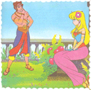
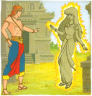

Legenda Candi Prambanan
( Cerita Rakyat Yogyakarta )
Dahulu kala ada seorang raja bernama Prabu Boko yang memerintah di Prambanan. Prabu Boko adalah seorang raksasa yang sakti. Ia mempunyai seorang puteri yang bernama Roro Jonggrang. Roro Jonggrang sangat cantik. Berbatasan dengan kerajaan Boko ada sebuah kerajaan bernama Pengging. Pada suatu hari raja Pengging ingin memperluas wilayah kerajaannya, maka ia mengutus puteranya, Bandung Bondowoso memimpin pasukan menyerang kerajaan Prambanan. Bandung Bondowoso berhasil mengalahkan pasukan Boko bahkan membunuh raja Boko.

Bandung Bondowoso pun tinggal di istana Prambanan. Ia jatuh cinta kepada Roro Jonggrang dan meminta gadis itu menjadi permaisurinya. Roro Jonggrang tidak ingin menjadi isteri Bandung Bondowoso yang telah membunuh ayahandanya. Ia mencari akal agar dapat menolak pinangan pangeran Pengging itu dengan halus. Akhirnya ia menemui Bandung Bondowoso dan berkata, “Aku mau menjadi isterimu, tetapi sebagai syaratnya engkau harus membuat dua buah sumur dan seribu candi dalam waktu semalam.”Meskipun syarat yang diajukan Roro Jonggrang mustahil dipenuhi orang lain, Bandung Bondowoso langsung menyanggupinya. Ia mengumpulkan makhluk-makhluk halus yang menjadi anak buahnya dan mulai menggali sumur dan membangun candi.
Bandung Bondowoso dan anak buahnya bekerja dengan sangat cepat. Dalam waktu singkat mereka sudah menyelesaikan sebuah sumur dan ratusan candi. Roro Jonggrang mengamati dari kejauhan dengan cemas. Ia berpikir keras untuk menemukan cara menggagalkan usaha Bandung Bondowoso. Roro Jonggrang pun memanggil dayang-dayang dan menyuruh mereka membakar jerami dan menabuh lesung. Api dari jerami yang dibakar membuat suasana menjadi terang dan suara tabuhan lesung yang gaduh mengejutkan makhluk-makhluk halus yang sedang bekerja. Mereka mengira hari telah pagi. Mereka pun melarikan diri, meninggalkan Bandung Bondowoso serta sumur dan candi yang belum selesai. Bandung Bondowoso berusaha memanggil mereka kembali, tetapi mereka tetap meninggalkannya.

Bandung Bondowoso sangat marah karena ia tahu Roro Jonggrang telah menggagalkan kerja kerasnya, namun ia berusaha menahan diri, “Tentu saja candi sudah selesai. Kalau tak percaya, silakan kau hitung sendiri.” Roro Jonggrang ditemani dayang-dayangnya menghitung candi satu persatu. Ternyata Bandung Bondowoso telah berhasil menyelesaikan sembilan ratus sembilan puluh sembilan candi.
“Kau gagal, Bandung. Masih kurang satu candi lagi,” kata Roro Jonggrang.
Bandung Bondowoso naik darah, “Kalau kau tidak berbuat curang, aku pasti bisa menyelesaikan seribu candi untukmu, Jonggrang,” katanya.
“Baiklah, aku penuhi keinginanmu. Jadilah kau, Roro Jonggrang, candi yang keseribu!” kutuk Bandung Bondowoso.
Maka Roro Jonggrang pun menjelma menjadi patung batu yang sangat cantik dan ajaib, batu-batu tersusun satu demi satu dengan sendirinya membentuk candi, mengelilingi patung itu. Sampai sekarang patung batu Roro Jonggrang yang cantik dapat kita saksikan di dalam ruangan candi utama di Prambanan.